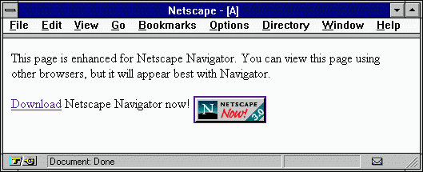
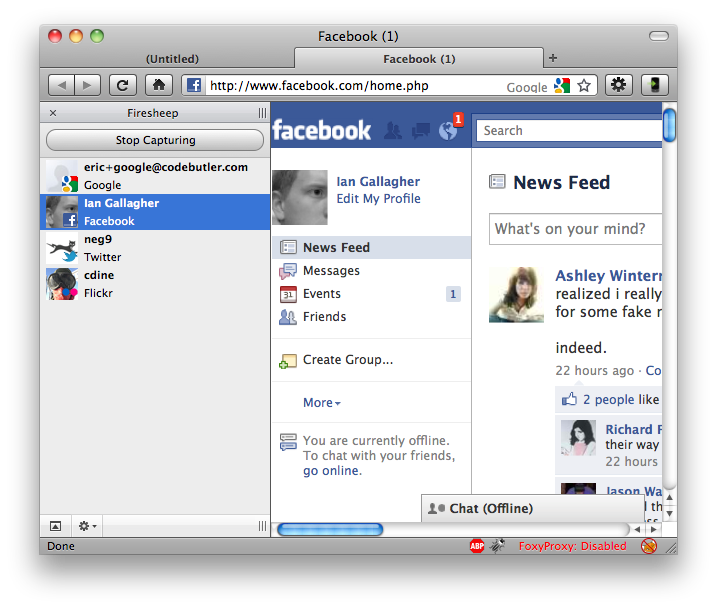
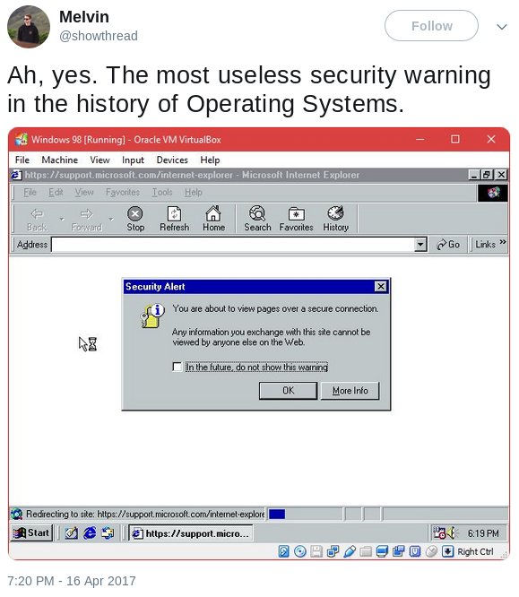
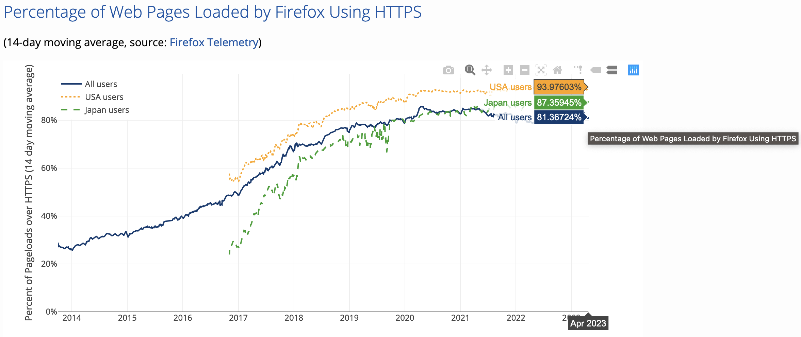

Acme, the Universe and everything
CNCF & Kubernetes Turku @ April 2023
@joohoi
WHOAMI
Let's Encrypt & ACME
- Let's Encrypt - CA
- ACME - Protocol
- Certbot - Client software developed by EFF
- Humble mission - Encrypt ALL THE WEBS
Benefits
Let's Encrypt and ACME
- Automatable
- Free of charge
- Open & Transparent
- Short certificate lifetime - 90d
- Only DV certificates
- Some limitations in place
- Speaks ACME
- IETF standard, RFC 8555
- JSON over HTTPS
- Has it all: accounts, TOS, challenges, etc.
- Challenge types: HTTP, DNS,
and TLS-SNI, TLS-ALPN (2018)
- ACME client software
- Manages acquirance, renewal and revocation
- (Optionally) Configures secure TLS settings for you
- (Optionally) Helps to configure security enhancements
TLS: not exactly new
years and TLS/SSL versions go by...
2010
- SSH has taken over. Nobody even thinks doing tasks over rlogin
- But web... Only the most critical / banking infra uses HTTPS
People are trying to push it though
What could go wrong? part 1: 404
- GoDaddy HTTP validation picks up validation string from any part of body, regardless of HTTP status code
- Almost 9000 certificates revoked as precautionary measure.
What could go wrong? part 2: OCR
- .eu, .be, .at and some other TLDs don't provide whois information as text, but as an image instead, to deter spambots...
- Comodo using OCR to dig admin email from image...
- ...altelekom.at interpreted as a1telekom.at...
- ...misissued certificate for a1telekom.at
- Found by Florian Heinz and Martin Kluge
What could go wrong part 3: RAs
- Symantec had a Registration Authority program in place, allowing companies in the program to independently issue certificates under Symantec intermediates
- Not a problem itself, but responsibility stays with Symantec...
- ...for misissuances for unvalidated domain names
- ...for typos in domain names
- ...for bogus ST, L, O and OU fields
- Potentially 30 000 certificates affected
Social engineered revocation
- Hanno Böck registered two test domains, and obtained certificates for them from Symantec
- He created forged private keys for them, and posted the keys to pastebin
- Reported to Symantec, and got them revoked
- Symantec tried to hide the reason for (mis)revocation
What could go wrong? part 4: StartCom / WoSign
Uhh...
- Any port for validation
- Certificates using SNI with subdomain.domain.tld and domain.tld, only subdomain.domain.tld was validated
- Able to add arbitrary domains to request after validation
- Backdated SHA-1 certificates (after 1.1.2016)
2012 - Let's Encrypt
Started by Josh Aas and Eric Rescorla from Mozilla, Peter Eckersley from EFF and J. Alex Halderman from University of Michigan.
The project was publicly announced in 2014.
2015 - Go live (BETA)
- ACME protocol draft was submitted to IETF in January
- ISRG Root X1 generated in June
- First certificate signed by Let's Encrypt intermediate: "helloworld.letsencrypt.org" October 14th
- Let's Encrypt intermediate cross-signed by IdenTrust
- Public beta starts in December 3rd!
- Roughly 30% of web requests made over HTTPS
2016
- Public beta ends in April, with almost 2 million signed certificates
- Certbot (formerly known as "letsencrypt") gets its name
- Comodo name hijack attempt (filed Oct 2015)
- Rapid growth. 20 million active certificates at the end of the year
- IPv6 & IDN support
- Alpha version of Nginx plugin in Certbot
- 46% of web requests made over HTTPS
2017
- 100 million certificates issued!
- At the end of the year 46 million unexpired certificates serving 61 million domains
- 58% of web requests made over HTTPS
2018...
- ACME v2 and wildcard support going live in
January,February, March - ...but we have an issue on our hands...
...2018
- ACME v2, wildcard support and DNS validation
- TLS-SNI challenge type disabled, and removed from ACME draft
- TLS-ALPN challenge type added
- Root certificate trusted by all major root programs
- 77% of web requests made over HTTPS
2019
- TLS-SNI turned off completely
- ACME protocol is now internet standard! RFC 8555
- Oak - Free and open CT log
- 80% of web requests made over HTTPS
2020
- Multi-perspective validation
- Billionth certificates issued
2021 - 2022
- Multi-perspective validation
- Billionth certificates issued
- CAA Account and method binding
- 3 million live sites using LE certificates
From this
...to this
acme-dns
Why dns validation?
- Non-HTTP? No need to open additional ports
- Complex infrastructure, loadbalancers, reverse proxies etc.
- Wildcard certificates
Typical Issues
- Only servers/providers with API or TSIG support.
- Credentials stored on every box!
Credentials on disk!
- Check for renewal cron jobs / systemd timers
- Some software like Caddy uses ENV vars: scripts!
- Certbot: cat /etc/letsencrypt/renewal/*.conf
- acme.sh: cat /home/*/.acme.sh/account.conf
- acme.sh: cat /root/.acme.sh/account.conf
- wildcard cert - probable win. ct logs!
Typical Validation flow
- CA -> Client: _validation_token_
- Client -> DNS: Create TXT record
- Client -> CA: Ok, ready
- CA -> DNS: Request TXT record
acme-dns validation flow
- CA -> Client: _validation_token_
- Client -> acme-dns: Create TXT record
- Client -> CA: Ok, ready
- CA -> DNS: Request TXT record
- DNS -> CA: Follow CNAME please
- CA -> acme-dns: Request TXT record
Acme-dns
A simplified DNS server with a RESTful HTTP API to provide a simple way to automate ACME DNS challenges.
- Authoritative DNS for delegated subzone
- NS record for subdomain
- Main features:
- Custom (in memory) records
- API only for TXT record updates
- CIDR mask whitelisting
- SQLite / PostgreSQL as backend
- Automatic LE certificates for API
- Instantly available, no need to wait for DNS propagation
How it works?
- Delegation apex subdomain
- Exactly two endpoints for POST data
- /register
- /update
- Credentials are disposable, just change CNAME
Workflow
- POST to acme-dns/register
- Get unique subdomain and credentials
- Can set IP whitelisting
- CNAME to the subdomain received from /register
- POST to acme-dns/update
- Automate!
- Works as long as the CNAME is in place
Register
▶ curl -X POST https://auth.yourdomain.tld/register
Response:
< HTTP/1.1 201 Created
< Content-Type: application/json
{
"allowfrom": [],
"fulldomain": "a14ec696-0df2-498c-a114-609319e67255.auth.yourdomain.tld",
"password": "suYXfkUYyDpo00tp9UV26o9PVK4wPqSVGsBwLakX",
"subdomain": "a14ec696-0df2-498c-a114-609319e67255",
"username": "05cc6238-ac36-4979-9455-f4f3fadc8792"
}
Update
▶ curl -v -X POST https://auth.yourdomain.tld/update \
-H 'X-Api-User: 05cc6238-ac36-4979-9455-f4f3fadc8792' \
-H 'X-Api-Key: suYXfkUYyDpo00tp9UV26o9PVK4wPqSVGsBwLakX' \
--data '
{
"subdomain": "a14ec696-0df2-498c-a114-609319e67255",
"txt": "___validation_token_received_from_the_ca___"
}
'
Response:
< HTTP/1.1 200 OK
< Content-Type: application/json
{"txt": "___validation_token_received_from_the_ca___"}
Query
▶ dig @auth.yourdomain.tld a14ec696-0df2-498c-a114-609319e67255.auth.example.org TXT
; <<>> DiG 9.10.3-P4-Debian <<>> @localhost a14ec696-0df2-498c-a114-609319e67255.auth.yourdomain.tld TXT
; (2 servers found)
;; global options: +cmd
;; Got answer:
;; ->>HEADER<<- opcode: QUERY, status: NOERROR, id: 37947
;; flags: qr rd; QUERY: 1, ANSWER: 1, AUTHORITY: 0, ADDITIONAL: 0
;; WARNING: recursion requested but not available
;; QUESTION SECTION:
;a14ec696-0df2-498c-a114-609319e67255.auth.yourdomain.tld. IN TXT
;; ANSWER SECTION:
a14ec696-0df2-498c-a114-609319e67255.auth.yourdomain.tld. 1 IN TXT "___validation_token_received_from_the_ca___"
;; Query time: 0 msec
;; SERVER: ::1#53(::1)
;; WHEN: Sat Jan 13 16:39:26 EET 2018
;; MSG SIZE rcvd: 180
Advanced topics
- CAA & CAA extensions
- Certificate distribution
CAA record
RFC 8659
Limit issuance to a (set of) CA's for this domain.
Email address for incident reports.
0x42.fi. IN CAA 0 issue "letsencrypt.org"
0x42.fi. IN CAA 0 iodef "mailto:joona@io.fi"
validation methods
CAA extension, RFC 8657
Limits issuance to an ACME account id.
example.com. IN CAA 0 issue "example.net; \
accounturi=https://example.net/account/1234; \
validationmethods=dns-01"Thanks!
- This presentation: https://io.fi/acme-everything
- ACME RFC-8555
- CAA RFC-8659
- CAA-Extensions RFC-8657
- You can find me by username joohoi on Github, Twitter, etc.